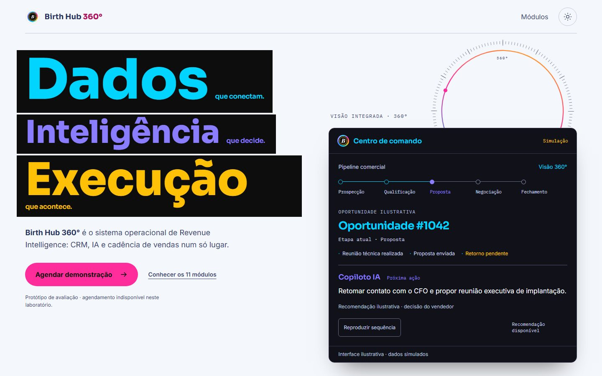
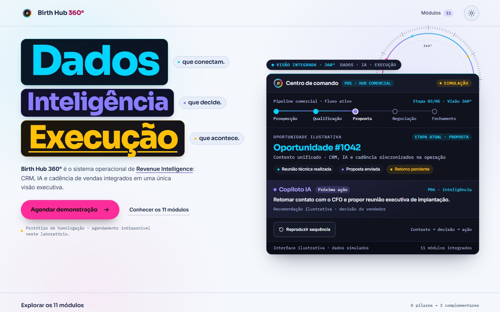
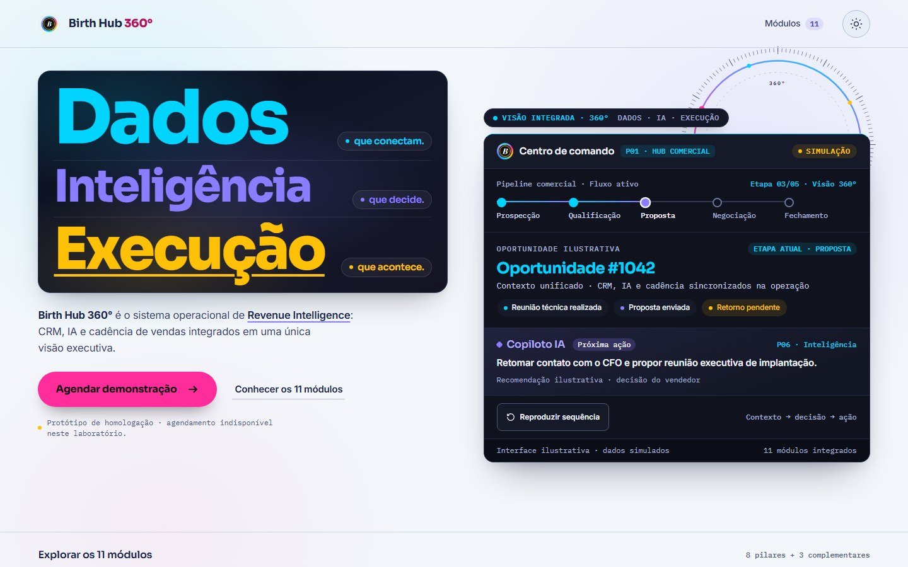
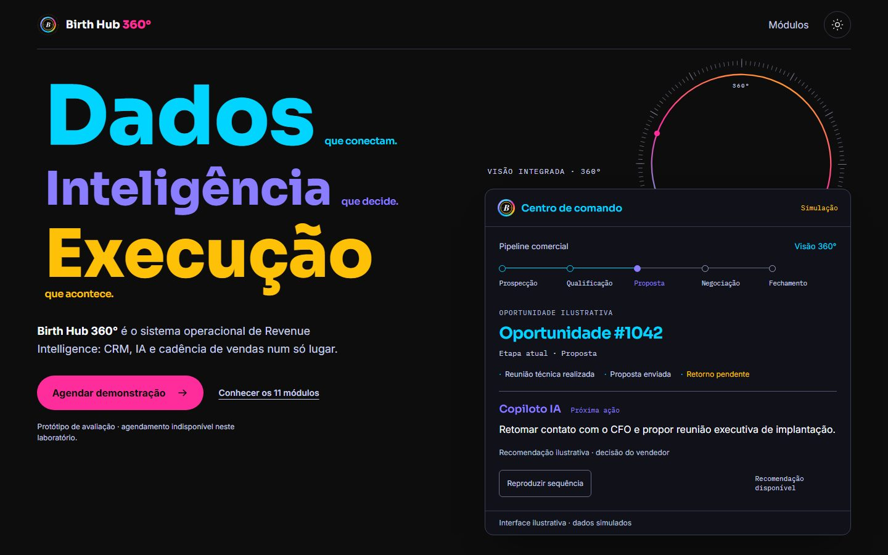
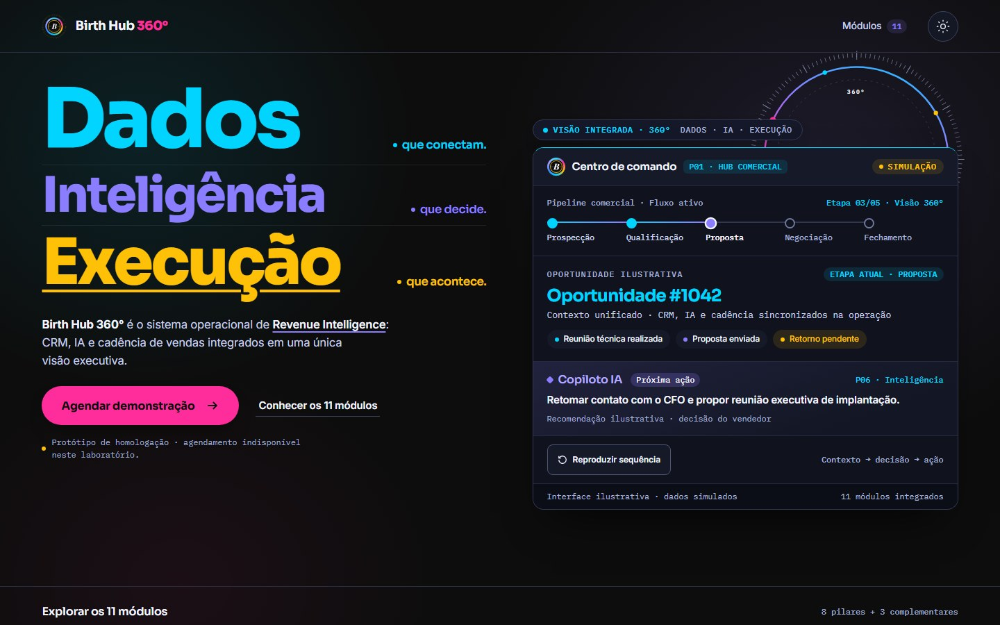
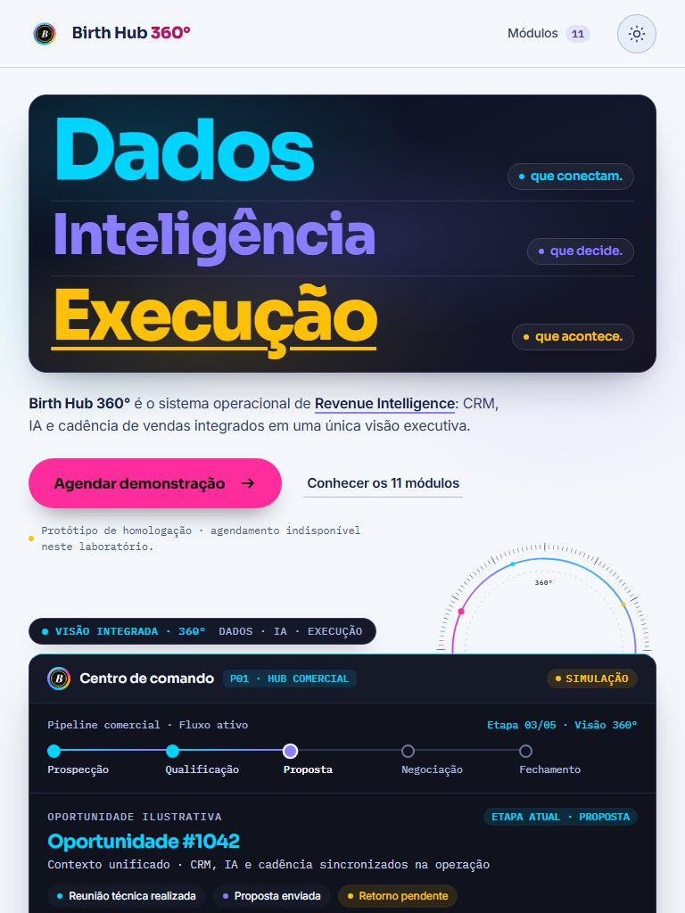
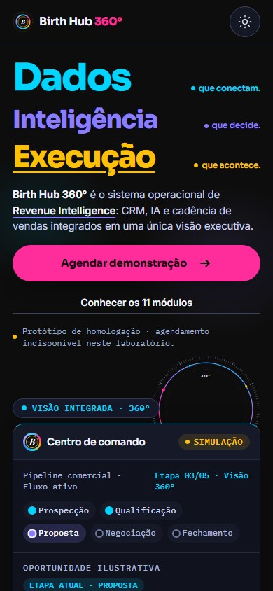
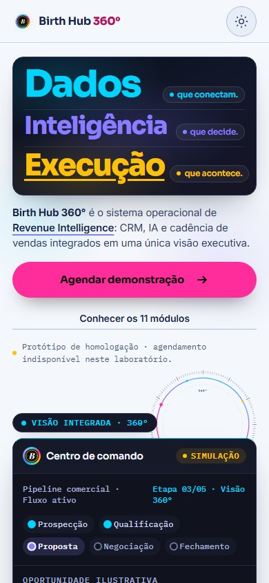
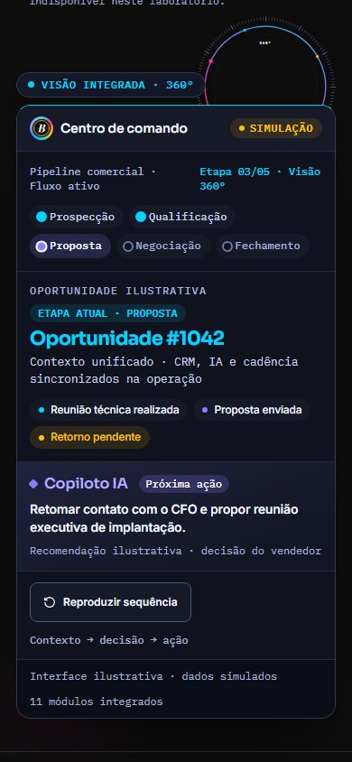
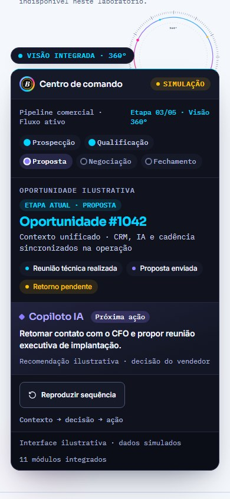

1. Evolução Light Mode: Missão 05 × Alternativa B × Alternativa A (N1 Final Candidate)
Comparação direta entre as três grandes placas pretas da Missão 05, a Alternativa B (Prismas Cromáticos Individuais sob cada palavra) e a Alternativa A implementada no N1 Final Candidate (Estúdio Editorial Cromático em Camadas com iluminação radial localizada, filetes divisórios e alinhamento suíço das tags).



2. Comparação Desktop (1440 × 900) — N1 Missão 05 × N1 Final Candidate
Alinhamento editorial das 3 linhas sem quebra órfã em Execução, sublinhado com skip-ink preservando a cedilha, integração do anel 360° nas 4 cores oficiais com ponte de telemetria e elevação do Centro de Comando.


3. Responsividade: Tablet (768 × 1024) e Mobile (390 × 844 / 360 × 780)
CTA principal visível acima da dobra no mobile (bottom 401.9 px no Dark e 431.2 px no Light em 390×844), sem sobreposições e com etapas do pipeline íntegras em pílulas conectadas.




